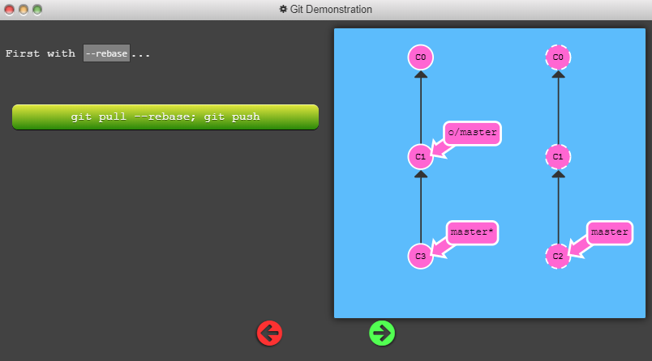

Remote repositories aren't actually that complicated. In today's world of cloud computing it's easy to think that there's a lot of magic behind git remotes, but they are actually just copies of your repository on another computer. You can typically talk to this other computer through the Internet, which allows you to transfer commits back and forth.
That being said, remote repositories have a bunch of great properties:
It's become very popular to use websites that visualize activity around remote repos (like Github or Phabricator), but remote repositories always serve as the underlying backbone for these tools. So it's important to understand them!
Up until this point, Learn Git Branching has focused on teaching the basics of local repository work (branching, merging, rebasing, etc). However now that we want to learn about remote repository work, we need a command to set up the environment for those lessons. git clone will be that command
Technically, git clone in the real world is the command you'll use to create local copies of remote repositories (from github for example). We use this command a bit differently in Learn Git Branching though -- git clone actually makes a remote repository out of your local one. Sure it's technically the opposite meaning of the real command, but it helps build the connection between cloning and remote repository work, so let's just run with it for now.
Now that you've seen git clone in action, let's dive into what actually changed.
The first thing you may have noticed is that a new branch appeared in our local repository called o/master. This type of branch is called a remote branch; remote branches have special properties because they serve a unique purpose.
Remote branches reflect the state of remote repositories (since you last talked to those remote repositories). They help you understand the difference between your local work and what work is public -- a critical step to take before sharing your work with others.
Remote branches have the special property that when you check them out, you are put into detached HEAD mode. Git does this on purpose because you can't work on these branches directly; you have to work elsewhere and then share your work with the remote (after which your remote branches will be updated).
You may be wondering what the leading o/ is for on these remote branches. Well, remote branches also have a (required) naming convention -- they are displayed in the format of:
<remote name>/<branch name>
Hence, if you look at a branch named o/master, the branch name is master and the name of the remote is o.
Most developers actually name their main remote origin, not o. This is so common that git actually sets up your remote to be named origin when you git clone a repository.
Unfortunately the full name of origin does not fit in our UI, so we use o as shorthand :( Just remember when you're using real git, your remote is probably going to be named origin!
Working with git remotes really just boils down to transferring data to and from other repositories. As long as we can send commits back and forth, we can share any type of update that is tracked by git (and thus share work, new files, new ideas, love letters, etc.).
In this lesson we will learn how to fetch data from a remote repository -- the command for this is conveniently named git fetch.
You'll notice that as we update our representation of the remote repository, our remote branches will update to reflect that new representation. This ties into the previous lesson on remote branches
git fetch performs two main steps, and two main steps only. It:
git fetch essentially brings our local representation of the remote repository into synchronization with what the actual remote repository looks like (right now).
If you remember from the previous lesson, we said that remote branches reflect the state of the remote repositories since you last talked to those remotes. git fetch is the way you talk to these remotes! Hopefully the connection between remote branches and git fetch is apparent now.
git fetch usually talks to the remote repository through the Internet (via a protocol like http:// or git://).
git fetch, however, does not change anything about your local state. It will not update your master branch or change anything about how your file system looks right now.
This is important to understand because a lot of developers think that running git fetch will make their local work reflect the state of the remote. It may download all the necessary data to do that, but it does not actually change any of your local files. We will learn commands in later lessons to do just that :D
So at the end of the day, you can think of running git fetch as a download step.
git fakeTeamwork 2
git commit
git pull
git push is responsible for uploading your changes to a specified remote and updating that remote to incorporate your new commits. Once git push completes, all your friends can then download your work from the remote.
the behavior of git push with no arguments varies depending on one of git's settings called push.default. The default value for this setting depends on the version of git you're using, but we are going to use the upstream value in our lessons. This isn't a huge deal, but it's worth checking your settings before pushing in your own projects.
Imagine you clone a repository on Monday and start dabbling on a side feature. By Friday you are ready to publish your feature -- but oh no! Your coworkers have written a bunch of code during the week that's made your feature out of date (and obsolete). They've also published these commits to the shared remote repository, so now your work is based on an old version of the project that's no longer relevant.
In this case, the command git push is ambiguous. If you run git push, should git change the remote repository back to what it was on Monday? Should it try to add your code in while not removing the new code? Or should it totally ignore your changes since they are totally out of date?
Because there is so much ambiguity in this situation (where history has diverged), git doesn't allow you to push your changes. It actually forces you to incorporate the latest state of the remote before being able to share your work.
you already know git pull is just shorthand for a fetch and a merge.
Conveniently enough, git pull --rebase is shorthand for a fetch and a rebase!

git fakeTeamwork
git commit
git pull --rebase
git push